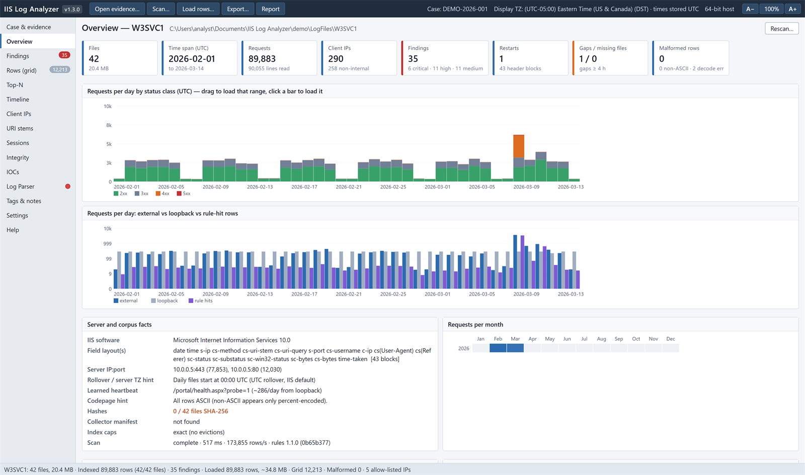
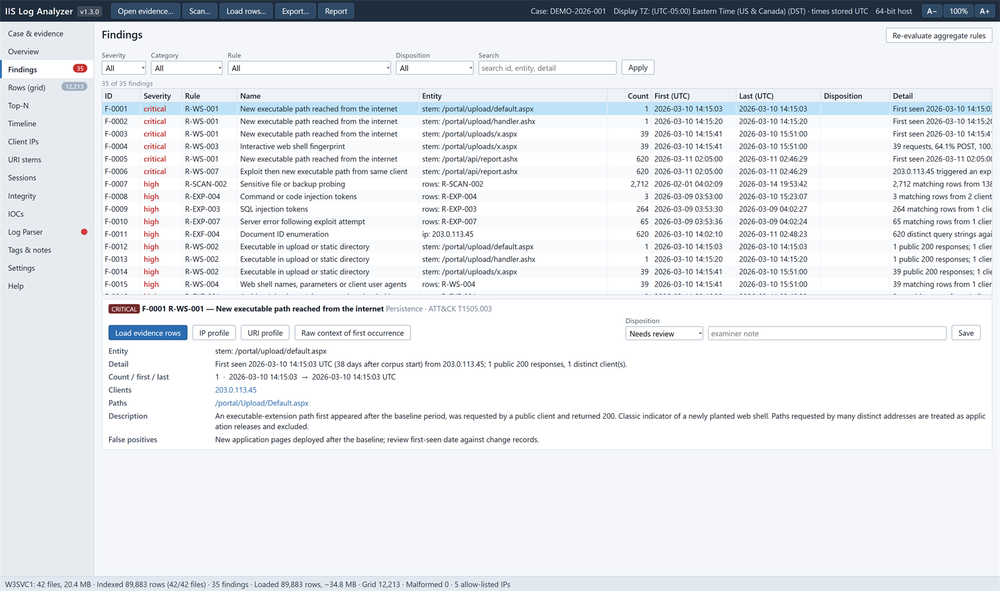
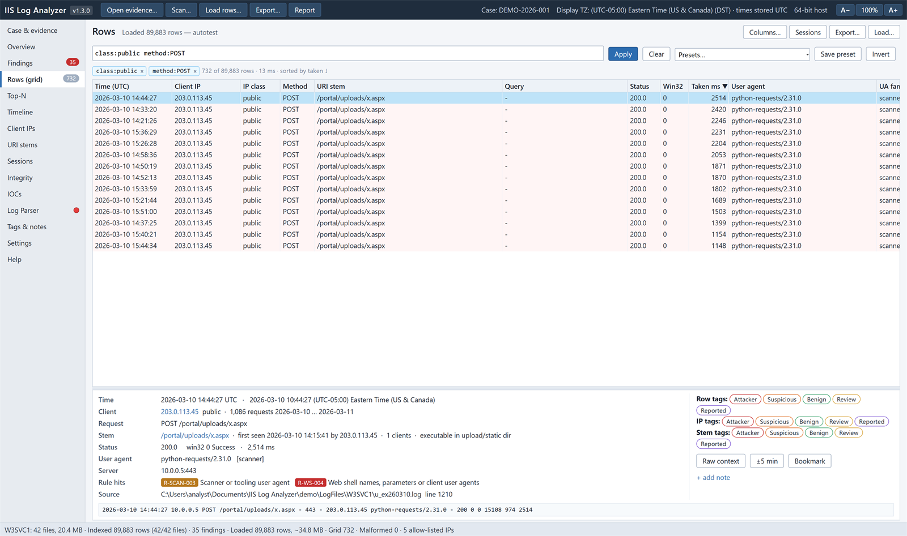
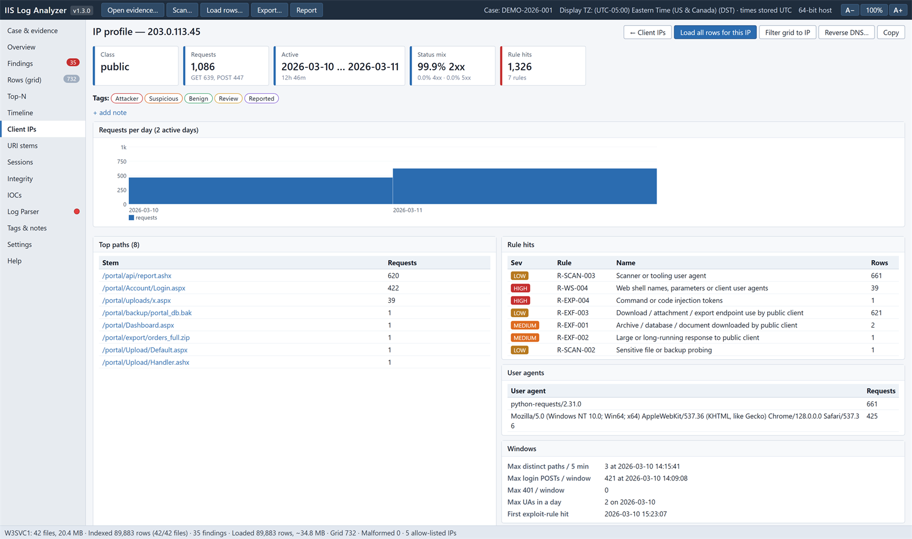
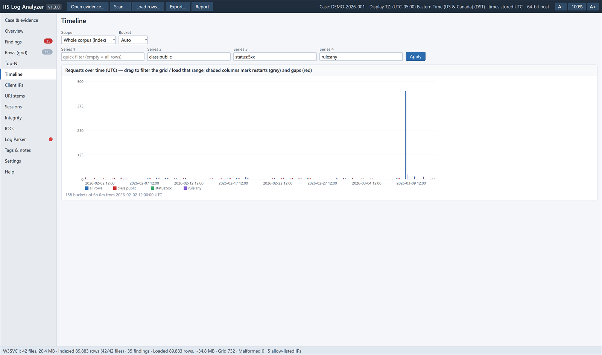
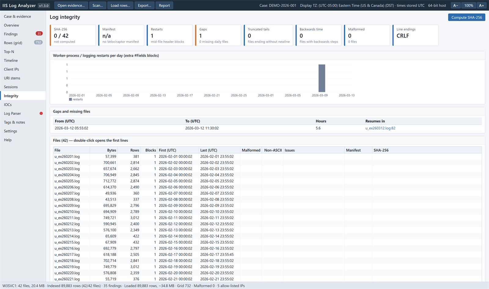
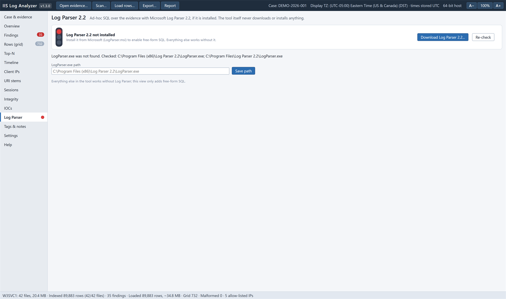

IIS Log Analyzer
Offline forensic analysis of Microsoft IIS W3C Extended logs, from a single HTML Application that runs on any Windows 10 or 11 workstation with nothing to install.
Contents
What it does
IIS Log Analyzer is built for investigators who receive web server logs from an incident: a Velociraptor collection, a copied LogFiles folder or a single log. It reads the logs once, builds a compact index of the whole corpus, runs 41 detection rules mapped to MITRE ATT&CK, and lets you drill from a finding down to the original log line in the evidence file.
Index first, rows on demand
Tens of millions of rows are summarised into per-day, per-client, per-path and per-user-agent aggregates. You then load only the slice you need into the grid.
Two scan engines, one result
A compiled C# engine scans about 250,000 rows per second. The built-in JavaScript engine needs nothing but the HTA. Both produce identical indexes and findings.
Forensically careful
Evidence is opened read-only and hashed; every action, filter and export goes to an audit log; exports carry SHA-256 sidecars.
Attacker data stays inert
Log fields are rendered only as text, CSV formula prefixes are neutralised and keys such as __proto__ are ordinary values.


Requirements and installation
- Windows 10 or 11. The app runs in
mshta.exe, which uses the IE11 engine that ships with Windows. - Optional, for the fast engine: Windows PowerShell 5.1 and .NET Framework 4.x, both present on every supported Windows version.
- Optional: Microsoft Log Parser 2.2 for free-form SQL. The tool never downloads or installs it.
There is nothing to install. Use either form of the application:
| Form | What to copy | When to use |
|---|---|---|
dist\IISLogAnalyzer.hta | One file (about 600 KB) containing all scripts, styles, rules, lists and the fast-engine source | Copying to an analysis workstation |
| Repository folder | IISLogAnalyzer.hta with lib\, rules\, lists\, config\ and engine\ | Editing rules or lists, development |
Files from another machine are blocked. Unblock the HTA (and the folder contents) before the first start: right-click → Properties → Unblock, or in PowerShell Get-ChildItem -Recurse | Unblock-File.
AppLocker, WDAC or Defender attack-surface-reduction rules may block mshta.exe. The tool cannot work around such a policy; request an exception for the analysis workstation.
Starting the application
Double-click IISLogAnalyzer.hta, or start it from a command line:
mshta.exe "C:\Tools\IIS Log Analyzer\IISLogAnalyzer.hta" "E:\Evidence\LogFiles\W3SVC1"- An evidence path given as the first argument is offered for opening.
- Double-clicking an
.htausually starts the 32-bitSysWOW64\mshta.exe. The app detects this and relaunches itself in the 64-bit host, which allows larger row loads. Add/no64to stay in 32-bit. The toolbar shows the host bitness. - Text size follows the Windows display scaling. Use A− and A+ in the toolbar, Ctrl+= / Ctrl+- or Ctrl+mouse wheel to adjust it, and click the percentage or press Ctrl+0 to reset. The choice is remembered.
/zoom:1.25sets it for one start.
Quick start
- Open or create a case. On Case & evidence, enter a case ID and choose Open / create. The case workspace is created under the workspace root (default
%USERPROFILE%\Documents\IIS Log Analyzer Cases). Fill in examiner, evidence ID and the display time zone. - Open the evidence. Choose Open evidence… and pick a
LogFilesfolder, aW3SVCnsite folder or a single.logfile. Sites are discovered automatically. - Scan. Choose Scan…, keep all files selected and start. The fast engine is used when available. The index is saved in the case and reused next time.
- Review. Read the Overview, then work through Findings by severity. Record a disposition for each.
- Load rows and investigate. From a finding choose Load evidence rows, or use Load rows… with a date range and pre-filter. Filter, pivot, read the raw lines, tag and take notes.
- Export and report. Export what you need and produce the HTML report. Everything is hashed and audited.
The window
| Area | Contents |
|---|---|
| Toolbar | The name and version (click the version to check for updates); Open evidence…, Scan…, Load rows…, Export…, Report; the case ID, display time zone and host bitness; text size controls. |
| Navigation | Case & evidence, Overview, Findings (with count), Rows (grid, with loaded count), Top-N, Timeline, Client IPs, URI stems, Sessions, Integrity, IOCs, Log Parser, Tags & notes, Settings, Help. Alt+1…9 jump to the first nine. |
| Status bar | Site, files and size; rows indexed; findings; rows loaded and their memory estimate; current grid count; malformed rows; allow-listed IPs. |
Cases and evidence
Case workspace
Every case has its own workspace, <workspace root>\<CaseID>\IIS-Log-Analyzer\:
case.json case details, display time zone, tags, notes, bookmarks, dispositions, presets, columns, IOCs
audit.log JSON Lines audit trail
index\ cached scan indexes
exports\ CSV, Timeline Explorer CSV, JSONL, raw bundles, Log Parser results, case bundle ZIP (+ .sha256)
reports\ self-contained HTML reports (+ .sha256)
tmp\ transient engine jobs, hashing and Log Parser scriptsThe workspace may never be inside the evidence folder; the tool refuses that configuration so nothing is written next to the evidence. Switching to another case clears all evidence, results and loaded rows of the previous case.
Evidence sources
- Folders and files. A
LogFilesfolder (all sites), a site folder such asW3SVC1, or one.logfile. Discovery searches three folder levels and groups files by site. - Velociraptor collections. Collections are recognised automatically: original paths (
C:\inetpub\...) are shown next to theC%3Apaths on disk, file sizes and SHA-256 values fromuploads.jsonandresults\*.jsonare compared with the evidence, andapplicationHost.configfrom the collection supplies site names and bindings. - Several sites. The Case view lists every discovered site; click one to switch. Each site has its own index.
Scanning and the index
A scan reads every selected file once and builds the index: totals, per-day and per-hour counts, per-client, per-path, per-user-agent and per-user aggregates, first-seen times, restarts, gaps, rule hits and the findings. Rows themselves are not kept, so a 16.7 GB corpus produces an index of about 150 MB.
Scan dialog
- Files: all files, a filename date range, or a filename glob.
- Engine: fast or built-in (see below).
- Hash files during the scan: computes SHA-256 of every evidence file in the background.
Engines
| Engine | How it runs | Speed |
|---|---|---|
| Fast (default when available) | engine\IISScanEngine.cs, compiled on first use by Windows PowerShell Add-Type, cached in %LOCALAPPDATA%\IISLogAnalyzer\engine, run hidden out of process | About 250,000 rows/s |
| Built-in | JavaScript inside the HTA window | About 57,000 rows/s |
The app hands the fast engine its own rules, lists, regular expressions, parser tables and time-zone table, and both engines finish through the same post-processing, so their results are identical value for value. If the fast engine cannot start (for example because PowerShell is blocked by policy), the app offers to rerun with the built-in engine. A watchdog reports an engine process that ends without finishing, never starts, stalls, or ignores a cancel.
Cancel and continue
A scan can be cancelled at any time. The partial index is kept and shown, together with the detection state at the cancel point. Continue scan resumes with the built-in engine and produces exactly the index and findings of an uninterrupted scan. A scan can only be continued with the rules, enabled rules and business hours it started with; otherwise rescan from the start.
Cached index
The index is stored in the case and loaded automatically when the site is opened again, if every file still has the size and modification time recorded at scan time. If any file changed, the cached index is not loaded and the changed files are reported: investigate why evidence changed before rescanning. Indexes from an older index format are rebuilt.
Overview
The Overview summarises the site: files and size, time span (UTC), requests and lines, client IPs and how many are non-internal, findings by severity, restarts, gaps and missing daily files, malformed rows and encoding problems. Charts show requests per day by status class and external versus loopback versus rule-hit rows; drag across a chart to load that range, or click a bar to load one day.
The Server and corpus facts panel lists the IIS software, field layouts, server addresses and ports, log rollover, the learned heartbeat (a monitoring request repeated from loopback), the code page in use, hash status, collector manifest and index caps.
Findings


Each finding names a rule, an entity (a client, a path, a file, a gap or a group of rows), a count, first and last time, a detail sentence, ATT&CK techniques, a description and known false positives. Filter by severity, category, rule, disposition or free text.
- Actions: Load evidence rows loads exactly the rows behind the finding; IP profile and URI profile open the entity; Raw context of first occurrence shows the lines around the first hit, read directly from the evidence file.
- Dispositions: Needs review, True positive, False positive, Benign true positive, each with an examiner note. They are saved in the case and appear in the report.
- Grouping: when a rule matches more than 25 clients, files or paths, the 25 strongest are separate findings and the rest are folded into one summary finding.
- Outcome: row-rule findings list their responses by status class. Rules that match the request itself are graded by the response (see Detection rules), so probes that only received 404s are reported as low.
- Re-evaluate aggregate rules rebuilds findings from the index after rule settings change. Row-rule changes need a rescan; the app warns when a row rule was enabled after the scan.
Loading rows
Load rows… streams the selected files again and keeps the rows that match a date range and an optional pre-filter (same syntax as the quick filter, for example class:public method:POST). Presets cover common slices. Loading stops at the row cap (2,000,000 rows in the 64-bit host by default); nothing is sampled, and a capped load says so.
- From a chart: dragging across or clicking a chart (Overview, Timeline, month heatmap, Integrity) opens the dialog with that time range for the rows and narrows the filename dates to the files that cover it, so only those files are read. Widen the file range if you need to.
- Keep raw lines stores the original text of each row for display, copying and raw exports.
- Files up to 32 MB are buffered while they are read; larger files are streamed so memory stays bounded.
- A file that cannot be opened is never skipped silently: the load is marked incomplete, the files are listed on screen, and every export from that load records them.
- To retrieve every hit of a rule beyond the pointers kept in the index, load with the pre-filter
rule:R-EXP-003.
Rows grid


class:public method:POST and sorted by time taken. The detail pane shows the selected row in UTC and in the case time zone, its rule hits, tag buttons and the raw line.- Quick filter (Ctrl+F): type terms and press Enter. Terms appear as removable chips. Invert negates the whole filter; Presets stores filters in the case.
- Sorting and columns: click a header to sort; Columns… chooses and orders columns (saved per case).
- Selection: arrows, PgUp/PgDn, Ctrl+Home/End; Shift/Ctrl+click for multiple rows; Ctrl+C copies rows as TSV and Ctrl+Shift+C copies raw lines.
- Pivots (right-click): filter to or exclude a client, status or path; the same user agent; ±5 minutes around the row; IP or URI profile; raw context (±50 lines); tag the row or IP as Attacker; add a note; copy.
- Raw context (Enter or double-click) reads the lines around the row straight from the evidence file.
- Tags and bookmarks: tag rows, IPs and paths (Attacker, Suspicious, Benign, Review, Reported), bookmark rows and add notes. All are stored in the case.
Filter syntax
Terms are combined with AND. Prefix any term with - to negate it. Bare words must all appear in the path or query. Values with spaces go in double quotes.
| Example | Meaning |
|---|---|
cip:203.0.113.45 cip:10.0.0.0/8 cip:/^203\./ | Client IP (also matches the effective IP from X-Forwarded-For), CIDR, regular expression |
class:public | IP class: public, rfc1918, internal, loopback, linklocal, cgnat, bogon, allowlisted |
sip:10.0.0.5 port:443 | Server IP and port |
method:POST method:invalid | Method, or any non-standard method |
status:4xx status:404.8 status:500-599 | Status class, status.substatus, range |
stem:login stem:*.aspx stem:=/exact stem:^/portal stem:/regex/ | URI path contains, glob, exact, starts with, regular expression |
ext:.aspx,.php dir:/uploads/ exec:yes static:no | Extension, directory prefix, executable handler, static asset |
new:2026-03-01 | Path first seen on or after a date |
query:cmd= qlen:>500 decerr:yes | Query contains, query length, URL-decoding errors |
ua:python family:scanner ua:empty | User agent contains, user-agent family, empty user agent |
taken:>30000 bytes:>1000000 | time-taken in milliseconds, sc-bytes |
after:2026-03-09 before:"2026-03-10 12:00" hour:0-6 dow:0,6 | Time in the case time zone (append Z for UTC), local hour, weekday (0 = Sunday) |
rule:any rule:R-EXP-* sev:high,critical | Any rule hit, rule ID or wildcard, hit severity as graded for that row |
tag:Attacker tag:none ioc:any | Tags and IOC matches |
file:u_ex2603* text:"phrase" | Source file name, raw-line substring |
-status:304 | Negation of any term |
Analysis views
Client IPs and IP profile


Client IPs lists every client in the index with class, requests, status mix, first and last time and rule hits. The IP profile shows activity per day, top paths, rule hits, user agents and window maxima (distinct paths in 5 minutes, login POSTs, 401 responses, user agents per day). From here you can load all of the client's rows, filter the grid or run an optional reverse-DNS lookup, which asks for confirmation first and is audited.
URI stems and URI profile
Every path with requests, clients, status mix and first-seen time. The profile shows who requested a path and when it first appeared; a new executable path in an upload directory is the classic web-shell signal.
Top-N
Ranks a dimension by a measure, over the whole index or over the loaded rows. Over the index the dimensions are client IP, URI path, user agent, status, method, extension, server IP and port, user-agent family, user name and rule; loaded rows add effective IP, IP class, directory, query, local hour, local weekday, UTC day and source file. Measures are rows, distinct IPs, distinct paths, 4xx, 5xx, POST, average and maximum time taken, first and last seen, and rule-hit rows.
Timeline


Up to four series, each defined by a quick filter, over the whole corpus or the loaded rows, with automatic or fixed buckets. Restarts and gaps are shaded. Drag across the chart to filter the grid or load that range.
Sessions
Groups loaded rows by client and user agent, split by idle time (30 minutes by default), with duration, request count, status mix, executable POSTs and rule hits.
Log integrity


Logs are evidence about themselves. The Integrity view shows SHA-256 status and collector-manifest comparison, restarts (extra #Fields blocks), gaps and missing daily files, files ending without a newline, timestamps that go backwards, malformed rows and line-ending anomalies, followed by a per-file table. Compute SHA-256 hashes every file in a hidden PowerShell process; re-hashing reports any file whose hash changed since the last run.
Dates and times are validated strictly. An impossible date such as 2026-02-31, a 60th second or extra characters after the time make a row malformed instead of being shifted to a valid timestamp.
IOCs, tags and notes
- IOCs accept
type,value,notelines or bare values: IPs, CIDRs, paths starting with/,re:regular expressions and free text. Matches are shown per IOC, are available asioc:anyin filters and can be exported. A Hawk-style IOC file can be imported. - Tags, notes and bookmarks are listed together on Tags & notes, with links back to the rows, clients and paths they belong to.
Log Parser 2.2


A traffic light at the top of the tab, and a dot next to Log Parser in the navigation, show whether Log Parser can be used:
| Light | Meaning |
|---|---|
| Green | LogParser.exe was found; its path is shown. |
| Amber | A path is set in Settings but no file exists there, and no default installation was found. |
| Red | Log Parser 2.2 is not installed. |
Download Log Parser 2.2… opens Microsoft's official download page (LogParser.msi, version 2.2.10) in your default web browser after a confirmation; the action is recorded in the audit log. Install it, then choose Re-check. The tool itself never downloads or installs anything. If Log Parser is installed elsewhere, enter the path to LogParser.exe and choose Save path.
If Microsoft Log Parser 2.2 is installed (default Program Files (x86)\Log Parser 2.2, or a path set in Settings), the Log Parser view runs SQL over the current site. {files} in a query expands to the evidence files. Templates cover the top clients, hourly volume, status breakdown, executable paths answered to non-internal clients, all requests from one client, 5xx errors and the slowest requests. The query is passed through a query file, never on a command line; results appear in a grid, can be exported with a hash, and every query is audited.
The bridge has been tested with a stand-in for LogParser.exe, not with the real program.
Updates
The version number is shown next to the name in the top-left corner of the window (and in the window title). Click it, or choose Check for updates… on the Help page or in Settings, to ask GitHub for the latest release. The check asks for confirmation first, because it contacts api.github.com: GitHub sees the workstation's public IP address and the app version, and nothing else is sent. Each check is recorded in the audit log of the open case. Automatic checks when the app starts can be turned on in Settings; they are off by default, which suits offline or air-gapped analysis workstations.
When a newer version exists, a dialog shows its release notes and offers:
| Choice | What happens |
|---|---|
| Download and replace (single-file HTA) | The new IISLogAnalyzer.hta is downloaded next to the running file and checked: its size, its SHA-256 against the value GitHub publishes for the release asset, and the version number inside it. Only if every check passes is the running file replaced; the previous file is kept next to it as IISLogAnalyzer-<old version>.bak.hta. You are then offered a restart. If any check fails, nothing is changed. If the application folder is not writable, the verified file is saved to your Downloads folder instead. |
| Download (source folder) | A copy that runs from the repository folder (the HTA plus lib\) cannot be replaced by one file, so the verified single-file HTA is saved to your Downloads folder. |
| Open release page | Opens the release on GitHub in your browser. |
When an update has been found, a green update label appears next to the version in the toolbar until you restart. Downloads and replacements are recorded in the audit log with the new file's SHA-256 and the backup path. Unblock a downloaded file (Properties → Unblock) before using it on another machine.
Exports and the report
| Export | Content |
|---|---|
| Grid rows → CSV (visible or all columns) | The filtered rows |
| Grid rows → Timeline Explorer CSV | UTC and local timestamps, client, method, status, path, decoded query and user agent, time-taken, rule hits, tags, source file, line, raw line |
| Grid rows → JSONL | One JSON object per row, decoded and raw values |
| Selected rows → raw line bundle | The original lines byte-for-byte as stored in the evidence, grouped by file with line numbers |
| Findings → CSV / JSON | All findings with dispositions |
| Integrity, Client IPs, URI stems, Sessions, Top-N → CSV | The corresponding tables |
| Log Parser result, IOC hits → CSV | The last query result, IOC matches |
| Case bundle → ZIP | The case workspace without temporary files |
Every export and report gets a .sha256 sidecar and an audit entry with its hash. Row exports also record whether the load was capped, cancelled or incomplete. CSV cells that start with =, +, - or @ are prefixed with an apostrophe so spreadsheet programs do not evaluate them.
Report writes a self-contained HTML report in nine parts: case information, evidence summary, methodology and limitations, key findings, attacker infrastructure, a timeline of key events, findings in detail with dispositions and example rows, log integrity observations, and an appendix that reproduces the audit log. All times are printed in UTC, with local times labelled.
Time zones
All times are parsed and stored in UTC; the index never depends on a time zone. The display time zone of a case can be any Windows time zone (with its historical daylight-saving rules), UTC, or a fixed offset. Local times in the grid, local-time filters (after:, before:, hour:, dow:), business hours for rule R-AUTH-004, Top-N by hour or day, Timeline Explorer exports and the report all use the offset in force at each instant, so daylight-saving changes are handled. Changing the display zone never requires a rescan.
The conversion matches Windows exactly: a self-test against the Win32 API found no differences in 58,884 checks across all 141 zones from 1990 to 2035.
Detection rules
rules\default-rules.json defines 41 rules with severity, ATT&CK techniques, description, false positives and tunable parameters. Row rules evaluate each request; aggregate rules evaluate the index; file and corpus rules evaluate log integrity. Rules can be switched on or off per case under Settings.
| ID | Severity | Scope | Name | ATT&CK |
|---|---|---|---|---|
| R-SCAN-001 | medium | aggregate | High 404 volume from single public client | T1595.003 |
| R-SCAN-002 | low | row | Sensitive file or backup probing | T1595.003 |
| R-SCAN-003 | low | row | Scanner or tooling user agent | T1595.002 |
| R-SCAN-004 | medium | row | Invalid HTTP method or 405/501 | T1595.002 |
| R-SCAN-005 | low | row | IIS request filtering block | T1595.003 |
| R-SCAN-006 | low | row | Directory listing or handler denial | T1595.003 |
| R-SCAN-007 | medium | aggregate | Rapid path enumeration | T1595.003 |
| R-SCAN-008 | low | row | PHP/Xdebug information probe | T1592 |
| R-SCAN-009 | info | aggregate | Generic mass-scanner profile (PHP probes on .NET server) | T1595.002 |
| R-EXP-001 | high | row | PHP-CGI argument injection (CVE-2024-4577 / CVE-2012-1823) | T1190 |
| R-EXP-002 | high | row | Path traversal | T1190, T1083 |
| R-EXP-003 | high | row | SQL injection tokens | T1190 |
| R-EXP-004 | high | row | Command or code injection tokens | T1190, T1059 |
| R-EXP-005 | medium | row | .NET / IIS specific probing | T1190 |
| R-EXP-006 | medium | row | Known product exploit path | T1190 |
| R-EXP-007 | high | row | Server error following exploit attempt | T1190 |
| R-EXP-008 | medium | row | Oversized or high-entropy request | T1190 |
| R-EXP-009 | low | row | Malformed / aborted request from public client | T1190 |
| R-WS-001 | critical | aggregate | New executable path reached from the internet | T1505.003 |
| R-WS-002 | high | aggregate | Executable in upload or static directory | T1505.003, T1105 |
| R-WS-003 | critical | aggregate | Interactive web shell fingerprint | T1505.003 |
| R-WS-004 | high | row | Web shell names, parameters or client user agents | T1505.003 |
| R-WS-005 | high | row | Static extension handled like a script | T1505.003 |
| R-WS-006 | medium | aggregate | Automation profile: only executable handlers, no static assets | T1505.003, T1071.001 |
| R-WS-007 | critical | aggregate | Exploit then new executable path from same client | T1190, T1505.003 |
| R-AUTH-001 | medium | aggregate | Login endpoint brute force | T1110 |
| R-AUTH-002 | medium | aggregate | Repeated 401 responses | T1110 |
| R-AUTH-003 | medium | row | Authenticated account activity of interest | T1078 |
| R-AUTH-004 | low | aggregate | Internal off-hours use of application handlers | T1078 |
| R-AUTH-005 | low | aggregate | User-agent rotation | T1110.004 |
| R-EXF-001 | medium | row | Archive / database / document downloaded by public client | T1005, T1041 |
| R-EXF-002 | medium | row | Large or long-running response to public client | T1041 |
| R-EXF-003 | low | row | Download / attachment / export endpoint use by public client | T1119, T1041 |
| R-EXF-004 | high | aggregate | Document ID enumeration | T1119 |
| R-INF-001 | high | corpus | Logging gap | T1070.004, T1562.002 |
| R-INF-002 | low | file | Worker process restarts | T1489 |
| R-INF-003 | high | file | Timestamp anomalies | T1070.006 |
| R-INF-004 | medium | file | Undersized or truncated log file | T1070.004 |
| R-INF-005 | info | corpus | Logging configuration change | T1562.002 |
| R-INF-006 | medium | corpus | Heartbeat absent | T1562.002 |
| R-INF-007 | low | file | Malformed or undecodable content | T1070 |
Severity graded by the response
Six row rules match the request itself (web shell names and parameters, PHP-CGI injection, path traversal, SQL and command injection, .NET probing): R-WS-004 and R-EXP-001 to R-EXP-005. A scanner that asks for /shell.php and gets a 404 is hunting for a web shell, not using one, so these rules carry "gradeByStatus": true and their severity follows what the server answered:
| Response | Severity of that hit |
|---|---|
| 2xx (reached a handler) or 5xx (the handler failed) | The rule's severity, as listed above |
| 3xx | One level lower |
| 4xx and anything else | Low |
| Status not logged | Unchanged |
Every request is still matched and counted, because failed attempts are evidence of who tried what and when. A finding takes the highest severity among its rows, so a single successful request keeps it at its full severity even among thousands of 404s. Each row-rule finding also lists its responses (for example Responses: 1 2xx, 1,640 4xx) and says when nothing succeeded. In the grid, sev: and the row colours use the graded severity, and the rule-hit badges in the row detail show it, with the rule default in the tooltip. Set gradeByStatus to false in rules\default-rules.json to turn grading off for a rule.
Custom rules
Add row rules to the JSON with a match block (see the disabled example C-EXAMPLE-001). Supported keys: method, stem, query, ua, user, raw (each {contains|glob|regex|equals}), status (404, 4xx, 404.8), ipClass, uaFamily, ext, cip (CIDRs), minTaken and exec.
Lists
lists\*.txt hold the vocabularies the rules use: sensitive paths, scanner user agents, executable and static extensions, login and download endpoints, known exploit paths, upload directories, web shell names and parameters. One entry per line; re: starts a regular expression, * and ? make a glob, anything else is a substring. Restart the app after editing.
Networks
- Internal CIDRs (Settings) are classed
internalin addition to RFC 1918 ranges. - Allow-listed IPs (a file, one address per line) are classed
allowlisted: their rows stay visible but public and internal rules do not fire for them. - Documentation ranges (192.0.2.0/24, 198.51.100.0/24, 203.0.113.0/24, 2001:db8::/32) are classed as bogons. For training and demo data only, Settings can treat them as public.
Settings
Defaults ship in config\settings.json; your changes are saved to %APPDATA%\IISLogAnalyzer\settings.json. Rule switches are saved per case.
| Setting | Default | Purpose |
|---|---|---|
| Case workspace root | %USERPROFILE%\Documents\IIS Log Analyzer Cases | Where case workspaces are created |
| Examiner | (empty) | Default examiner for new cases, recorded in the audit log |
| Default display time zone | UTC | Time zone for new cases |
| Business hours | 08:00–19:00, Monday–Friday | Off-hours detection (R-AUTH-004), in the case time zone |
| Max loaded rows | 2,000,000 (64-bit), 400,000 (32-bit) | Row cap for loads |
| Keep raw lines | On (64-bit) | Keep original line text with loaded rows |
| Stream files larger than (MB) | 32 | Larger files are read incrementally |
| Index caps (IPs, paths, user agents) | 250,000 / 500,000 / 100,000 | Bound the index; rare entries are evicted, entries with evidence value never are |
| Rule-hit pointers kept per rule | 20,000 | Rows per rule that findings can load directly |
| Session idle minutes | 30 | Session split |
| Hash files during scan | On | SHA-256 of every evidence file |
| Internal CIDRs, allow-list file, IOC file | none | Network classification and IOC import |
| Log Parser 2.2 path | detected | Optional SQL bridge |
| Check for updates when the app starts | Off | Asks GitHub for the latest release at start-up (network) |
Forensic handling
- Evidence is opened read-only by both engines, and the case workspace cannot be placed inside the evidence folder. Reading can update NTFS last-access times where that is enabled, so work from a copy or a mounted image as usual.
- SHA-256 values are computed out of process and compared with Velociraptor records where present; re-hashing reports changed files.
audit.logrecords case actions, evidence opened, scans (with engine, rule fingerprint, disabled rules and time zone), hashes, loads, every grid filter, tags, dispositions, Log Parser queries, exports and reports with their hashes. The report reproduces it.- The rule-set fingerprint covers the rule text and which rules are enabled, so an index or report identifies exactly the rules that produced it.
- The tool makes no network connections unless you ask for one. The network actions are: an optional reverse-DNS lookup of one IP, behind an operational-security warning; opening the Log Parser download page in your browser; and the update check and download from GitHub. Each asks for confirmation (the start-up update check runs only when enabled in Settings) and is audited.
- Text is read as Windows-1252, which maps every byte losslessly; lines that are valid UTF-8 (the IIS default) are shown decoded. Raw exports always contain the original bytes.
Performance
Measured on a production corpus of 4,817 daily files (16.7 GB, 67.4 million rows) in the 64-bit host:
| Operation | Result |
|---|---|
| Full scan, fast engine | 4.5 minutes |
| Full scan, built-in engine | 19.8 minutes, peak 3.1 GB memory |
| Reopen with cached index (148 MB) | 5.1 s to load the index, 11.9 s including discovery |
| Load one 146 MB file (637,000 rows, raw kept) | 7.8 s |
| Filter 637,000 rows by client | 57 ms |
| Sort 590,000 rows by time taken | 0.36 s |
| SHA-256 of all 4,817 files | 33 s |
Troubleshooting
| Symptom | What to do |
|---|---|
| The HTA does not open, or opens and closes | Unblock the file; check AppLocker, WDAC and Defender ASR policy for mshta.exe. Startup errors are written to %TEMP%\iisla-startup-error.log. |
| "Fast engine failed" or "did not start" | PowerShell may be blocked. Accept the offer to use the built-in engine, or choose it in the scan dialog. |
| "Cached index is from an older version" | Rescan; the index format changed. |
| "Evidence changed since indexing" | One or more files differ from the scan. Find out why before rescanning; the files are listed in the audit log. |
| "Cannot continue this scan" | Rules, enabled rules or business hours changed after the cancel. Rescan from the start. |
| "Load incomplete" | Some files could not be read. Check access, locks or missing files; exports from the load record the omission. |
| "Row cap reached" | Narrow the date range, file set or pre-filter, or raise the cap in Settings (64-bit host). |
| Text too small or too large | Use A− / A+ or Ctrl+mouse wheel. |
| Non-English paths look wrong | Lines that are not valid UTF-8 are shown as Windows-1252; the raw bundle still contains the original bytes. |
Keyboard shortcuts
| Keys | Action |
|---|---|
| Ctrl+= / Ctrl+- / Ctrl+0 | Larger, smaller, reset text size |
| Ctrl+F | Quick filter |
| Ctrl+L | Load rows |
| Ctrl+E | Export |
| Alt+1…9 | Views |
| Arrows, PgUp, PgDn, Ctrl+Home/End | Move in grids |
| Shift/Ctrl+click | Select several rows |
| Ctrl+C / Ctrl+Shift+C | Copy rows as TSV / copy raw lines |
| Enter or double-click | Raw context from the evidence file |
| Right-click | Pivot menu |
F5 is disabled because reloading would discard the loaded rows.
Demo data and testing
The repository contains no real evidence. To try the tool, generate the synthetic demo logs used for the screenshots in this manual and open demo\LogFiles\W3SVC1:
node tools\make-demo-logs.jsThe demo covers 42 days of traffic for a fictitious portal with an intrusion: automated scanning, a login brute force, a web shell upload and its use, document enumeration and a large download, after-hours internal activity, a server restart and a logging gap. Its attackers use documentation IP ranges, so turn on treat documentation ranges as public in Settings before scanning it. tools\capture-screens.ps1 regenerates the screenshots.
The test folder holds the regression tools: a Node.js harness that runs the scanner headless, an engine comparison, a cancel-and-resume comparison, a time-zone oracle, a self-test runner for the HTA itself, and hostile fixtures for markup injection, field reordering, malformed rows, encodings and impossible dates. See the README for the commands.
Known limitations
- An HTA cannot hold a whole multi-gigabyte corpus in memory: the index plus a pre-filtered load is the designed workflow. Loading rows always uses the built-in engine.
- Per-client tracking keeps the first 32 distinct paths and 8 user agents of each client; further ones are counted as overflow. Load the client's rows for the complete picture.
- Rule-hit pointers are kept for the first 20,000 hits per rule (raw text for the first 200); load with
rule:<id>to retrieve all. - Window-based rules (rapid enumeration, login brute force, 401 bursts, document-ID enumeration) use tumbling windows, not sliding ones.
- IIS binary (
.ibl), ODBC, NCSA and IIS native log formats are not parsed; Apache and nginx are out of scope. - The Log Parser bridge has not been tested against the real
LogParser.exe.